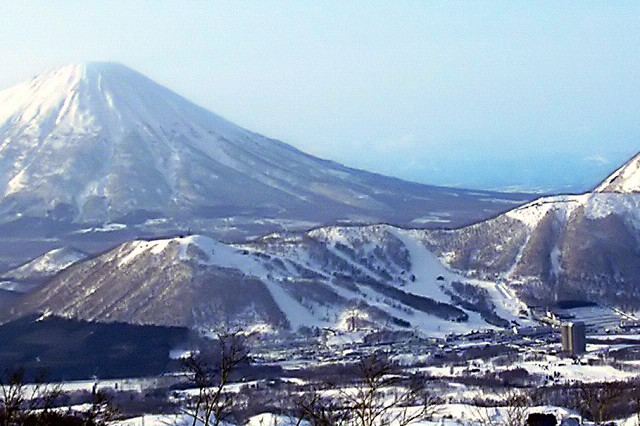

니세코에 자리 잡고,
루스츠로 하루 다녀온다
Base in Niseko,
day-trip to Rusutsu
거점은 하나, 산은 둘
One base, two mountains
니세코
Niseko
크리스마스에 눈이 확실한 유일한 후보. 그리고 스트로베리 필즈라는, 트리런이 처음이어도 실제로 탈 수 있는 구역이 있다.
The only candidate where the snow is a safe bet at Christmas. And it has Strawberry Fields — a zone you can actually ride the first time you ski trees.
루스츠
Rusutsu
트리런 상품 자체는 루스츠가 더 낫다. 홋카이도에서 입문용 글레이드는 여기가 최고다. 다만 눈은 니세코보다 덜 온다.
The tree skiing itself is better at Rusutsu. Its glades are the best introduction in Hokkaido. It just gets less snow than Niseko.
그래서 눈이 확실한 곳에 자리를 잡고, 트리런이 제일 좋은 곳은 하루 다녀오는 구성이다. 반대로 하면 12월에 눈이 부족할 위험을 트립 내내 떠안게 된다.
So the shape is: base where the snow is certain, day-trip to where the trees are best. Do it the other way round and you carry December's snow risk for the whole trip.


스트로베리 필즈 — 같은 구역에서 각자 다른 강도로 탄다
Strawberry Fields — one zone, everyone picks their own intensity
하나조노 1번 리프트에서 내려 왼쪽으로 빠져 짧게 트래버스하면 나오는 큰 트리런 구역이다. 나무 간격이 넓고 면적이 커서, 처음 타는 사람이 안전하게 배울 수 있는 곳으로 알려져 있다.
It's the big tree zone you reach by getting off Hanazono Lift #1, cutting left and traversing a short way. The trees are widely spaced and the area is large, which is why it has a reputation as a place you can safely learn in.
이 팀에 이게 맞는 이유는 실력 차이 때문이 아니다. 넷 다 정설은 충분히 타고, 두 명은 파우더가 처음일 뿐이다. 스트로베리 필즈는 같은 리프트를 쓰면서 진입 강도만 각자 고르는 구조라, 하루 종일 따로 놀 필요가 없다.
This fits the group not because of a skill gap. All four ski groomers fine; two of them simply have no powder mileage yet. Strawberry Fields lets everyone share one lift and choose only how far in they go, so nobody spends the day skiing alone.
크리스마스 주간은 일본 스키 시즌에서 제일 붐비고 제일 비싸다
Christmas week is the busiest and most expensive week of the Japanese ski season
그리고 니세코가 그 타격을 가장 크게 받는 곳이다. 성수기 초급 슬로프는 “사람 슬라럼”이라는 말이 나올 정도다.
And Niseko takes that hit harder than anywhere else. Peak-season beginner slopes get called a “human slalom”.
다만 스트로베리 필즈는 그 메인 초급 동선에서 비켜나 있고, 강습을 안 넣기로 한 이상 “크리스마스엔 강습 자리가 없다”는 제일 큰 문제는 애초에 해당이 없다. 남는 건 리프트 줄과 가격인데, 이건 실재한다.
That said, Strawberry Fields sits off the main beginner traffic, and since lessons were never part of this plan, the single biggest peak-week problem — no lesson slots at Christmas — doesn't apply here. What's left is lift queues and price, and those are real.
대안: 12월 예보가 괜찮고 사람 많은 걸 정 못 견디겠으면 베이스를 루스츠로 바꾸는 스왑이 가능하다. 눈의 확실성을 조금 내주고 한산함을 사는 교환이다.
Alternative: if the December forecast looks fine and the crowds are a dealbreaker, swapping the base to Rusutsu is possible. You trade a little snow certainty for quiet.
후라노와 키로로가 빠진 이유
Why Furano and Kiroro are out
- 후라노 — 규정 때문에 빠졌다. 정설 슬로프를 벗어나려면 베이스 사무실에서 스키 패트롤에 신고해야 하고, 지정된 5개 진입 지점으로만 들어갈 수 있으며 경계 단속이 엄격하다. 리프트 아래 뻥 뚫려 보이는 곳도 금지다. 결정적으로 후라노의 나무 간격은 대체로 매우 좁다. 좁은 나무 + 허가제 조합은 첫 파우더를 타보려는 사람에게 거의 최악이다.
- Furano — out on regulations. To leave the groomed runs you have to register with ski patrol at the base office, you may only enter through five designated gates, and the boundary is enforced strictly. Even the wide-open-looking ground under the lifts is off limits. And decisively, Furano's trees are mostly very tightly spaced. Tight trees plus a permit system is close to the worst combination for someone riding powder for the first time.
- 키로로 — 곤돌라 운휴 때문에 빠졌다. 트리런 지형은 좋지만, 바람으로 곤돌라가 멈추면 산이 통째로 잠긴다. 이번 트립에서 제일 피하고 싶은 실패 방식이 정확히 그것이다.
- Kiroro — out on gondola closures. The tree terrain is good, but when wind stops the gondola the whole mountain locks up. That is exactly the failure mode this trip most wants to avoid.
후라노는 “가격”이나 “눈”이 아니라 접근 정책 때문에 탈락했다. 어떤 예약 사이트에도 안 나오는 정보다.
Furano didn't lose on price or on snow — it lost on access policy. That's on no booking site anywhere.
날짜가 아니라 순서가 중요하다
The order matters, not the dates
3일차와 4일차는 고정이 아니다. 눈 온 다음 날을 스트로베리 필즈에 쓰고, 맑고 단단한 날을 루스츠에 쓰는 게 맞다. 아침에 정하면 된다. 5박 6일은 제안이고, 휴가 일수에 따라 스키 일수만 늘리거나 줄이면 된다.
Days 3 and 4 are not fixed. Spend the day after a snowfall on Strawberry Fields and a clear, firm day on Rusutsu. Decide it in the morning. 5 nights / 6 days is a proposal — stretch or shrink the ski days to fit the leave you actually have.
확실한 숫자와, 아직 아닌 숫자
The numbers that are solid, and the ones that aren't
리프트권은 공시 가격이라 그대로 쓰면 되고, 숙소와 항공은 아직 견적을 안 받았다. 그런데 크리스마스 홋카이도에서는 그 두 개가 총액을 지배한다 — 그래서 아래를 “총액”이 아니라 “지금 아는 것”으로 읽는 게 맞다.
Lift passes are published prices, so those go straight in. Lodging and flights have not been quoted yet. And in Hokkaido at Christmas those two dominate the total — so read the table below not as a total but as what is known right now.
| 항목Item | 엔JPY | 원KRW | 출처Source |
|---|---|---|---|
| 니세코 리프트권 × 3일Niseko lift pass × 3 days | ¥40,500 | 38.3만383k | 공시Published |
| 루스츠 리프트권 × 1일Rusutsu lift pass × 1 day | ¥9,700 | 9.2만92k | 공시Published |
| 식비 + 잡비 (6일)Food + incidentals (6 days) | ¥48,000–72,000 | 45–68만450–680k | 구간Range |
| 장비 렌탈 (4일 · 파우더 폭 권장)Equipment rental (4 days · wide skis advised) | ¥20,000–28,000 | 19–26만190–260k | 구간Range |
| 숙소 · 항공Lodging · flights | — | 미견적not quoted | 미정TBD |
- 니세코 리프트권은 하루 ¥13,500이다. 성수기 구간이 2026년 12월 24일 ~ 2027년 2월 28일이라, 크리스마스 주간은 정확히 그 첫날부터 들어간다. 12월 23일까지는 ¥12,600이니, 하루만 앞당겨도 사람과 가격이 같이 내려간다 — 날짜를 조금이라도 움직일 수 있으면 이게 제일 큰 레버다.
- The Niseko pass is ¥13,500 a day. The peak band runs 24 Dec 2026 – 28 Feb 2027, so Christmas week starts on precisely the first day of it. Through 23 Dec it is ¥12,600 — moving a single day earlier takes the crowds and the price down together. If the dates can move at all, this is the biggest lever there is.
- 루스츠는 온라인이 ¥9,700, 현장이 ¥11,500이다. 당일치기 하루짜리니 미리 사두면 그냥 이득이다. (2025-26 가격 기준, 26-27은 아직 미발표)
- Rusutsu is ¥9,700 online and ¥11,500 at the window. It's a single day trip, so buying ahead is free money. (2025-26 pricing; 26-27 isn't published yet.)
- 숙소가 이 트립의 진짜 변수다. 크리스마스~신정 성수기는 보통 12월 21일 ~ 1월 2일로 잡히고, 니세코는 이 구간에 가격이 몇 배로 뛴다. 지금 견적을 안 낸 건 게을러서가 아니라, 지금 잡느냐 아니냐로 숫자 자체가 달라지기 때문이다.
- Lodging is the real variable on this trip. The Christmas–New Year peak is usually set at 21 Dec – 2 Jan, and Niseko prices multiply across that window. Not quoting it yet isn't laziness — the number itself depends on whether you book now.
크리스마스 홋카이도 숙소는 지금 잡아야 한다
Book the Hokkaido Christmas lodging now
세 트립 중에서 예약 급한 건 이것 하나다. 1월 트립과 2월 트립은 아직 시간이 있지만, 크리스마스 주간 니세코 숙소는 훨씬 일찍 마감되고 지금 이미 8월이다.
Of the three trips, this is the only one where booking is urgent. January and February still have room, but Christmas-week Niseko lodging closes out far earlier, and it is already August.
순서는 숙소 → 항공 → 나머지 전부다. 리프트권이나 렌탈은 언제든 살 수 있지만, 4명이 들어갈 방은 그렇지 않다.
The order is lodging → flights → everything else. Lift passes and rentals can be bought any time; a room that sleeps four cannot.
FAQ
FAQ
스트로베리 필즈는 나무 간격이 넓고 면적이 커서 처음 배우기 좋은 곳으로 알려진 구역이다. 그리고 모든 라인이 정설 슬로프로 모여서 길을 잃을 수가 없다. 다만 트리런은 혼자 들어가지 않는 게 원칙이라, 항상 둘씩 붙어 다니는 걸로 한다.
Strawberry Fields is widely spaced and large, and it has a reputation as a good place to learn. Every line funnels back to a groomed run, so getting lost isn't really possible. The one rule: never go into trees alone — always in pairs.
된다. 원블랙 정설을 타는 사람이면 기술은 이미 있다. 없는 건 파우더 마일리지다. 파우더는 더 어려운 기술이 아니라 다른 기술이라 — 앞뒤 밸런스, 두 발을 같이 쓰는 것, 속도를 죽이지 않는 것 — 맞는 지형에서 하루 이틀이면 붙는다. 스트로베리 필즈가 정확히 그 지형이다. 강습은 이번 트립 요구사항이 아니고, 넣어도 되지만 필수는 아니다. 강습보다 스키 폭이 먼저다 — 아래 장비 항목을 본다.
Yes. If you ski single-black groomers, the technique is already there. What's missing is powder mileage. Powder isn't a harder skill, it's a different one — fore-aft balance, working both skis as a pair, not scrubbing off speed — and on the right terrain it takes a day or two. Strawberry Fields is exactly that terrain. Lessons were never a requirement for this trip; you can add one, but it isn't necessary. Ski width matters more than a lesson does — see the equipment question below.
12월에 눈이 확실한 곳이기 때문이다. 니세코는 12월 내내 꾸준히 눈이 쌓여서 크리스마스면 대부분의 코스가 열린다. 다른 후보들은 트리런은 더 좋아도 12월 적설이 덜 확실한데, 눈이 안 오면 트리런 자체가 성립을 안 한다. 붐비는 건 참을 수 있지만 눈이 없는 건 못 참는다.
Because it's the one place where December snow is a safe bet. Niseko builds steadily through December, so by Christmas most of the terrain is open. The other candidates have better trees but less certain December cover — and without snow there is no tree skiing at all. Crowds are survivable; no snow isn't.
루스츠는 맑은 날이 더 많고 그만큼 눈이 덜 온다. 12월은 적설량이 불확실한 유일한 달이라, 베이스를 루스츠로 잡으면 트립 전체가 그 도박 위에 놓인다. 하루 다녀오는 건 위험 없이 좋은 부분만 가져오는 방법이다. (덧붙여, 루스츠를 이미 타본 사람이 있다.)
Rusutsu gets more clear days, and correspondingly less snow. December is the one month where cover is uncertain, so basing there puts the whole trip on that bet. A day trip takes the good part without the risk. (Also, someone in the group has already skied Rusutsu.)
필수는 아니다. 신치토세–니세코는 공항 셔틀이 잘 다니고, 니세코 안에서는 마을 셔틀로 충분하다. 루스츠 당일치기 하루만 차나 셔틀이 필요한데, 니세코–루스츠 셔틀 상품이 따로 있어서 그걸 쓰면 겨울 운전을 아예 안 해도 된다. 홋카이도 겨울 도로에 자신 없으면 이 쪽이 낫다.
Not required. Airport shuttles run well between New Chitose and Niseko, and the village shuttle covers Niseko itself. Only the Rusutsu day needs a car or a shuttle, and there's a dedicated Niseko–Rusutsu shuttle service, which means you can skip winter driving entirely. If nobody is confident on Hokkaido winter roads, take that.
빌린다. 그리고 폭 넓은 걸로 빌린다. 기본 렌탈 세트는 정설용 폭이고, 니세코 눈에서 그건 잘 타는 사람도 못 타는 사람처럼 만든다. 니세코 렌탈 샵은 허리 105mm·118mm대 파우더 스키를 갖추고 있는데, 파우더가 처음인 사람에게는 이게 강습보다 효과가 크다. 자기 스키가 카빙 폭이면 가져오는 게 오히려 손해다. 덤으로 항공 스키백 비용(편도 사람당 10~20만원)도 안 든다.
Rent — and rent wide. Standard rental packages come at piste width, and in Niseko snow that makes a good skier feel incompetent for reasons that have nothing to do with their skiing. Niseko shops stock powder skis in the 105mm and 118mm waist range, and for someone new to powder that does more than a lesson would. If your own skis are carving-width, bringing them is a net loss. It also saves the ski-bag fee on the flight (₩100–200k per person each way).
니세코 마을에 온천이 있고, 히라후 쪽은 식당과 상점이 모여 있어서 반나절 정도는 충분히 보낸다. 하루를 통째로 비운다면 오타루 당일치기가 무난하다.
There are onsen in the Niseko villages, and the Hirafu side has the restaurants and shops clustered together, which fills half a day easily. For a whole day off, an Otaru day trip is the safe answer.
위 일정은 5박 6일 제안이고 확정이 아니다. 이동에 첫날과 마지막 날이 통으로 들어가서 스키는 4일 남는다. 휴가가 더 되면 니세코 날을 늘리는 게 맞다 — 루스츠를 두 번 가는 것보다 눈 좋은 날을 더 많이 확보하는 쪽이 낫다.
The itinerary above is a 5 nights / 6 days proposal, not a decision. Travel eats the first and last day whole, which leaves four ski days. If there's more leave available, add Niseko days — more chances at good snow beats a second trip to Rusutsu.
확정해야 할 것
What needs deciding
- 니세코 숙소 4인 — 지금 무료 취소 조건으로 일단 잡아둔다. 이게 늦으면 나머지가 다 의미 없어진다
- Niseko lodging for 4 — now, on free-cancellation terms. If this slips, nothing else on the list matters
- 날짜를 12월 23일 이전으로 당길 수 있는지 — 리프트권이 ¥900 싸지고, 성수기 진입 자체를 하루 피한다
- Whether the dates can move before 23 Dec — the pass drops ¥900 and you dodge the first day of the peak band entirely
- 인천–신치토세 항공 4석 — 크리스마스 주간이라 좌석 블록이 관건
- Four ICN–CTS seats — it's Christmas week, so a block of seats is the constraint
- 총 일수 확정 (위는 5박 6일 가정)
- Total trip length (the plan above assumes 5 nights / 6 days)
- 루스츠 이동 방법 — 셔틀 상품 vs 렌터카
- How to get to Rusutsu — shuttle service vs rental car
- 렌탈 장비 예약 — 인원 확인, 그리고 파우더 폭(105mm+) 재고는 크리스마스 주간에 제일 먼저 빠진다
- Rental bookings — confirm who needs gear, and note that wide (105mm+) stock goes first in Christmas week